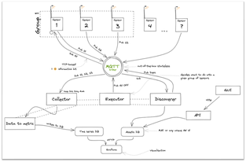

Inteligentne oświetlenie miasta
Założenia projektu
Celem projektu było stworzenie inteligentnego systemu, który umożliwi optymalizację zużycia energii elektrycznej w mieście. Rozwiązanie znacząco wpłynie na pobór energii elektrycznej przez system oświetlenia ulic miasta. Wyeliminowana zostanie nadmiarowość naświetlania ulic, zmniejszając zanieczyszczanie światłem. Główną funkcjonalnością systemu jest wykrywanie ruchu pieszego, które będzie zintegrowane z oświetleniem miejskim.
Poniżej znajduje się schemat architektury systemu. Całość składa się z 12 elementów logicznych:
- grup sensorów na latarniach zbierających informacje o ruchu
- collector - moduł odpowiedzialny za zbieranie danych z sensorów
- executor - moduł wysyłającego informacje o konieczności zaświecenia wskazanych grup latarni
- discoverer - moduł zarządzający dostepnymi urządzeniami oraz ich ustawieniami
- data to metric - moduł odpowiedzialny za zapisywanie danych o funkcjonowaniu sieci do bazy danych
- time series DB - baza InfluxDB z informacjami odnosnie funkcjonowania sieci
- assets DB - baza Postgress zawierająca informacje o urządzeniach znajdujących się w sieci
- grafan - instancja narzędzia Grafana zawiejrająca wizualizację wszystkich danych zbieranych przez system
- api - REST API do komunikacji Assets DB - wyświetlanie i modyfikacja danych
- aplikacja webowa - aplikacja dostepna z poziomu przegladarki pozwalająca na sterowanie ustawieniami lamp
- discoverer - moduł obsługujący nowe urządzenia podłączane do systemu
- guardian - moduł zarządzający dostępem do brokera
 Schemat architektury